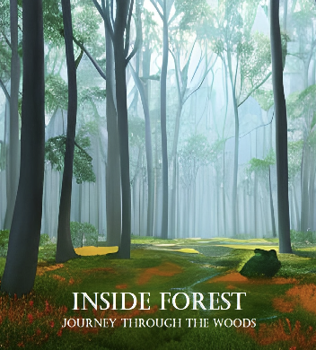

Projects

InsideForest
My first Python Library
My first R package
Extends fitdist() + AD & KS tests

SQL Reporting tool
Automated SQL & R reports

Ensemble Learning
Time-Series Analysis
Wine production & sales
Time Series + Operations R.

My second R package
Accelerate code writing